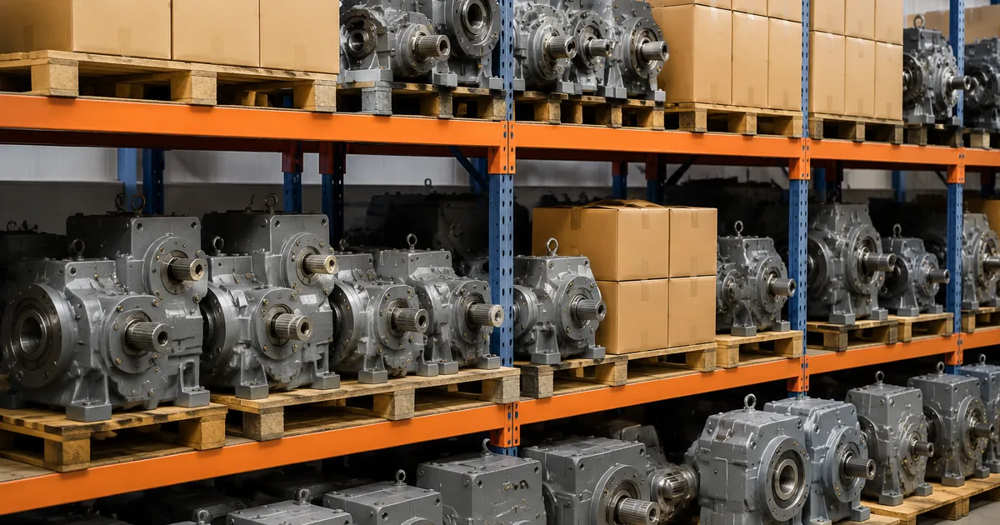
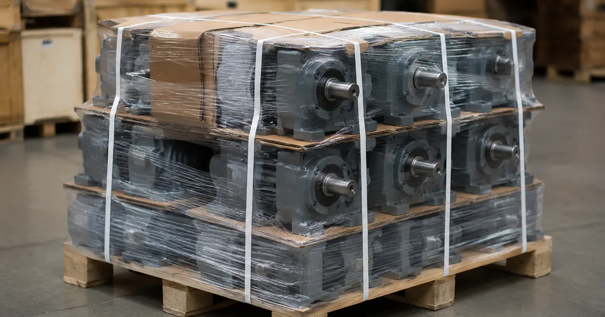

Когда привод встал, разговор идёт не о цене, а о датах. Проблема в том, что «срок поставки» — это не одно число, а сумма четырёх независимых слагаемых, и сжимаются они по-разному: одно почти бесплатно, другое только деньгами, третье вообще не сжимается. Разложим срок на части и посмотрим, где в нём реально лежат сутки.

Как читать этот материал. Это типовой сценарий, а не история конкретного заказчика: названий предприятий, отзывов и сумм договоров здесь нет. Мы описываем повторяющуюся инженерную задачу и порядок её решения — то, что применимо к вашему приводу.
Четыре слагаемых срока
Любая замена, аварийная или плановая, состоит из одних и тех же этапов. Разница между «за неделю» и «за полтора месяца» набирается по частям.
| Этап | Обычная длительность | Что его сокращает | Чем платим за ускорение |
|---|---|---|---|
| Подбор и расчёт | от нескольких часов до двух дней | полный комплект исходных данных, присланный сразу | ничем — это бесплатное ускорение, целиком в руках заказчика |
| Изготовление или отгрузка со склада | склад — тот же день; изготовление — от трёх дней | согласие на складской типоразмер, даже если он не идеально совпадает | переходная плита, иногда небольшой избыток по моменту |
| Доставка | от суток по Уралу до недели на Дальний Восток | авиа- или экспресс-доставка вместо обычной автомобильной | только деньгами; расстояние расчётом не сжимается |
| Демонтаж и монтаж | смена при подготовленной оснастке | заранее заказанный съёмник, готовая ответная деталь, подготовленная рама | ничем, если подготовиться параллельно с изготовлением |
Главный вывод из таблицы нелогичный на первый взгляд: самое дешёвое ускорение лежит в первом этапе, а не в последнем. Сутки, потерянные на уточнение исходных данных по телефону, потом не отыгрываются ни экспресс-доставкой, ни ночной сменой в цехе.
Комплект, который экономит сутки
Есть набор данных, при котором расчёт делается в тот же рабочий день, и набор, при котором начинается переписка. Разница между ними — полчаса на объекте.
В полный комплект входит: фото шильда редуктора, фото шильда двигателя, фото узла в сборе с видимой рамой и муфтой, замеры выходного вала и фланца либо межосевых расстояний лап, обороты на выходе и одна фраза о том, что это за механизм и в каком режиме он работает.
Отправлять лучше письмом на zr@zavod-red.ru, а не описывать голосом: фотографии инженер читает быстрее, чем расшифровывает описание, и не переспрашивает. Если табличка не читается, порядок обмера разобран отдельно — подбор по габаритам; расшифровка обозначений — на странице про шильд.
Три решения, которые действительно ускоряют
Складской типоразмер вместо точного совпадения. Если геометрия сходится, это отгрузка в тот же день вместо изготовления. Иногда складской типоразмер даёт избыток по моменту — на сроке это выигрыш, на ресурсе не проигрыш.
Переходная плита вместо перебора типоразмеров. Плита проектируется и режется быстрее, чем ждать редуктор с идеально совпадающими лапами. Это нормальное инженерное решение, а не компромисс, — но заказчик узнаёт о ней до оплаты.
Сохранение существующего двигателя. Если входной фланец по IEC совпадает, меняется только редукторная часть. Короче срок, ниже стоимость, меньше работы на монтаже.
Четвёртое решение — параллельность. Подготовка оснастки, заказ съёмника и расчистка места идут одновременно с изготовлением, а не после отгрузки. Это не ускоряет поставку, но убирает день-два из хвоста.
Марка, серии и что именно по ней определяет срок
По каждой марке срок упирается в своё. Где-то в размерный ряд, который совпадает с нашим и потому закрывается складом; где-то в редкий тип вала; где-то в габарит, который не возят обычным транспортом.

| Марка | Серии | Что определяет срок |
|---|---|---|
| Boneng | C, F, K, S — мотор-редукторы; H и B — промышленные редукторы в 2–4 ступени; ряд K303–K318. | Тип посадки полого вала. Шпонка закрывается быстро, стяжная втулка и эвольвентный шлиц требуют ответной детали, и это плюс несколько дней, если её не заказать сразу. |
| Flender | H1–H4 и B2–B4, типоразмеры 03–14; серия T в разъёмном корпусе. | Масса и габарит. Верхние типоразмеры — это моменты до 113 000 Н·м и соответствующие вес и логистика: доставка перестаёт быть быстрым этапом, а на монтаж нужна грузоподъёмная техника. |
| Guomao | GR, GF, GK (ряд GK37–GK157), GS; планетарные PV, экструдерные ZLYJ. | Почти ничего, и это хорошая новость. Ряд 37–157 совпадает с европейской сеткой, геометрия сходится напрямую, поэтому замена чаще всего закрывается складским типоразмером. |
| KEB | G0–G9, F0–F9, K0–K9, S0–S4. Моменты по ряду: K0 — 58 Н·м, K5 — 1 430, K9 — 12 200 Н·м; червячные S0 — 55 Н·м, S4 — 1 160 Н·м. | Исполнение, а не типоразмер. Буква в конце обозначения (A, B, C, S, V) задаёт способ крепления и тип вала; уточнить её надо в первом же письме, иначе расчёт придётся переделывать. |
| Siemens | SIMOGEAR: E, Z, D — соосные; FZ и FD — плоские; B и K (K39–K189) — коническо-цилиндрические; C и S — червячные. Мощность 0,09–55 кВт, момент до 19 500 Н·м. | Наличие 17-значного заказного номера 2KJ3… на двигателе. Если он есть, исполнение восстанавливается за минуты и этап подбора схлопывается почти в ноль. Если нет — обычный обмер. |
| UNIT DRIVE | UD-RV, UD-NRV, UD-R, UD-F, UD-K, UD-TRC плюс ГОСТ-линейки: Ч, 2Ч, Ц2У, Ц3У, РМ, РК, РЦД, КЦ, ЦТНД. | Какая из двух линеек стоит на объекте. UD-* меряется по европейской сетке и закрывается быстро. ГОСТ-редуктор задаётся межосевым расстоянием, и подбор идёт по нему — это отдельная ветка каталога и другой срок. |
Списки аналогов по маркам собраны отдельно: Boneng, Flender, Guomao, KEB, Siemens.
Оригинал или аналог: как сравнивать честно
Мы возим оригиналы под заказ и изготавливаем габаритные аналоги, и зарабатываем на обоих вариантах. Поэтому цифры по обоим даём сразу и рядом: срок и стоимость оригинала против срока и стоимости аналога ZR.
Сравнивать их надо не по цене узла, а по цене простоя. Если час остановленной линии стоит дороже разницы в цене привода, вопрос закрывается арифметикой, а не предпочтениями. Если линия дублирована и простой не критичен — ждать оригинал бывает разумно.
Третий вариант, о котором забывают: поставить аналог сейчас и заказать оригинал в резерв. Линия работает, оригинал приезжает через свой срок и ложится на полку как аварийный запас.
Чего не стоит делать в спешке
Три «экономии времени», которые возвращаются повторным простоем через несколько недель. Поставить редуктор в другом монтажном положении без пересчёта количества масла и без переноса пробок. Набить узел на вал ударами вместо съёмника. Пренебречь инструментальной проверкой соосности, ограничившись линейкой.
Каждая из трёх экономит от получаса до половины смены — и стоит следующей замены. На аварийном ремонте соблазн сильнее всего, поэтому список стоит держать перед глазами у слесаря, а не у снабженца.
Что получает заказчик на выходе
По итогам разбора мы отдаём три вещи: типоразмер ZR с расчётом момента, передаточного числа и запаса; заключение по геометрии — встаёт ли он на существующее место и нужна ли переходная плита; срок и стоимость, рядом со стоимостью и сроком оригинала под заказ. Дальше решение за вами.
Если по геометрии однозначного совпадения нет, мы говорим это прямо, а не предлагаем «почти подходящий» вариант, который придётся дорабатывать на месте. Переходная плита — нормальное инженерное решение, но заказчик должен знать о ней до оплаты, а не после доставки.
На изделия собственного производства действует гарантия 36 месяцев, к редуктору прилагается паспорт с фактическими параметрами. Комплект документов — на странице гарантии. Сроки и стоимость доставки — на странице расчёта доставки, порядок оплаты — в разделе цен.
Прикинуть типоразмер, пока идёт переписка, можно в калькуляторе подбора. Если привод стоял на конвейере, порядок замены разобран отдельно — замена редуктора на конвейере. Разделы каталога: соосные, цилиндрические, коническо-цилиндрические, червячные.
Линия стоит прямо сейчас? Соберите комплект из шести пунктов выше и отправьте на zr@zavod-red.ru одним письмом. Расчёт по полному комплекту возвращается в тот же рабочий день, и в нём сразу будут обе цифры — по аналогу ZR и по оригиналу под заказ.